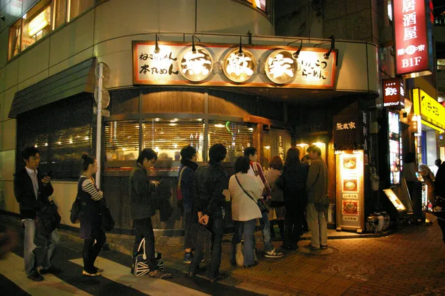
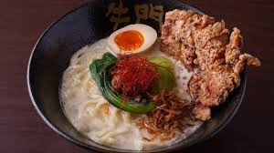
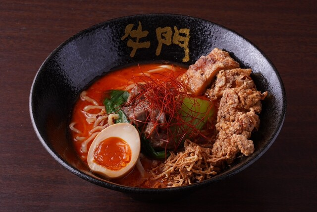

Jour 4 : repos
Programme de la journée
Petit dejeuner inclus avec l'hotel
- Repos la matinée
- Visite l'après-midi
- Visite de nuit Tokyo
Activités l'après-midi
Activités
- Matinée repos : s'habituer au Jet lag
- Le midi mange dans un restaurant de ramen près de l'hôtel
Gyumon Ramen Ikebukuro :

Devanture

ramen champignon

ramen épicé
Quartier Harajuku
Objectif : se reposer et dépenser les 100€ d'argent de poche
- Quartier de la mode
Possiblité d'achat dans des gachapon:

ou encore pour acheter des vêtements, des boissons ou autres...
Dépense Total
Dépense du jour
- Lieu : gratuit
- Nourriture midi : 234,3€
- Nourriture soir manger à l'hôtel acheter au 7eleven 8€/personnes
- Activité de culturelle : 0€
Coût : 19 200¥ (~120€)
Total de la journée: 354,3€
Budget restant : 10 607,16€ (~1 697 145,6¥)